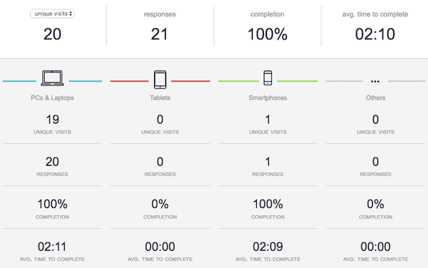

## CTEC3905: Front-End Web Development
# **Lecture 4**
**Dave Everitt**: lectures & labs
deveritt@dmu.ac.uk
**Fania Raczinski**: labs
fania.raczinski@dmu.ac.uk
# REMINDERS - **1**
- **indent your code** properly (with 2 spaces)!
- **Assignment 0 is ongoing**—turn up! Stay in lectures!
- **Check your DMU email** 3 times a week
- **Revise the links** on Blackboard and in lecture slides
- **GitHub** Open an account and **start pushing** code
# REMINDERS - **2**
- For more **HTML and CSS learning**, use [the 2nd yr book](https://vle.dmu.ac.uk/webapps/blackboard/content/listContent.jsp?course_id=_441585_1&content_id=_3472567_1 "There's a *limited edition* with a kitten on the cover")
- your GitHub account should now be set up (see Blackboard for more info)
- got GIT on your own machine? See Blackboard
# The informal questionnaire **1**
## What you think about front-end development
[Results so far](https://deveritt.typeform.com/report/uUzysR/VMUq)
[Missed it? Do it!](https://deveritt.typeform.com/to/uUzysR)
# The informal questionnaire **2**

# ASSIGNMENT 1: ESSAY - **1**
Deadline: *Turnitin only*, wk 7 (Fri 18/11/2016, 12 noon)
2000–3000 words
3 OR 4 websites are BOTH okay!
- **Show an understanding** of web technologies
- **Use structure** in your essay (subheads, lists, etc.)
- **Find references** to back up your statements
**FINAL CHECK:** [detailed marking criteria on Blackboard](https://vle.dmu.ac.uk/webapps/blackboard/content/listContent.jsp?course_id=_441585_1&content_id=_3415918_1 "*Don't repeat* what's on Blackboard")
# NEW RESOURCES: **1**
- flexbox on Blackboard/Resources
- set up your code editor on your own machine (see Blackboard)
- boilerplate code (Demo Emmet in VS Code)
- emerging features and browser prefixes (caniuse)
# NEW RESOURCES: **2**
- [future of CSS, Jen Simmons (2016)](http://www.creativebloq.com/features/6-web-layout-myths-busted)
- [PostCSS](http://julian.io/some-things-you-may-think-about-postcss-and-you-might-be-wrong/) (does much of what LESS, SASS do)
# CSS ANIMATION: **1**
[CSS3 animation Property (W3Schools)](http://www.w3schools.com/cssref/css3_pr_animation.asp)
Example: [animated movie posters](http://demo.marcofolio.net/3d_animation_css3/)
# CSS ANIMATION: **2**
## components
- transitions (what to change)
- transformations (shape-shifting)
- keyframes (custom timeline)
use separately or together
# CSS ANIMATION: **3**
## `transition`
CSS properties change over a given time e.g.
```css
transition: width 4s ease-in-out 1s;
/* cubic-bezier(0.6, -0.28, 0.735, 0.045) */
```
**property**: the CSS to transition (comma-separated, all)
**duration**: length of the transition (seconds/milliseconds s ms, infinite)
**timing**-function: (optional) ‘speed curve’ of the transition
**delay**: time before transition starts
OMG TMI: [Easing functions](http://easings.net/)
# CSS ANIMATION: **4**
```css
## `transform`
```
transform: rotate(70deg);
**translate**: transform: translate(540px,-200px);
**rotate(360deg)**
**scale(2)**
**skew**
# CSS ANIMATION: **5**
## syntax
```css
an-element {
animation: change-stuff 5s infinite;
}
@keyframes change-stuff {
25% {
styles 1/4 way through;
}
50% {
styles 1/2 way through;
}
75% {
styles 3/4 way through;
}
}
```
# CSS ANIMATION: **6**
## what is (not) animatable?
**not** `display: none|block`
# CSS ANIMATION: **7**
“CSS animations, transforms and transitions are not automatically GPU accelerated, and instead execute from the browser’s slower software rendering engine. So what exactly forces the browser to swap to GPU mode? Many browsers provide GPU acceleration by means of certain CSS rules.”
— [Guil Hernandez (2012)](http://blog.teamtreehouse.com/increase-your-sites-performance-with-hardware-accelerated-css)
- [CSS `will-change` is a last resort](https://developer.mozilla.org/en/docs/Web/CSS/will-change)
- [detailed hardware acceleration answer on StackOverflow](http://stackoverflow.com/a/26371807/123033)
# CSS ANIMATION: **8**
## some examples
- [Original Hover Effects](http://tympanus.net/Tutorials/OriginalHoverEffects/)
- [chessboard vacuum (Ana Tudor)](http://codepen.io/thebabydino/pen/FpAun?editors=0100)
- [Bending Effect - Page Flip (Fabrizio Bianchi)](http://codepen.io/fbrz/pen/whxbF)
- css-solar-system (Codecademy) (local)
- rotating colour box (CodePen) (local)
- parallax scrolling: [Firewatch CSS-only version](http://codepen.io/samdbeckham/pen/OPXPNp)
# I HAVE NO **** IDEA
## HOW HE DID THIS
[Responsive caaaaat (Masayuki Kido)](http://roxik.com/cat/)